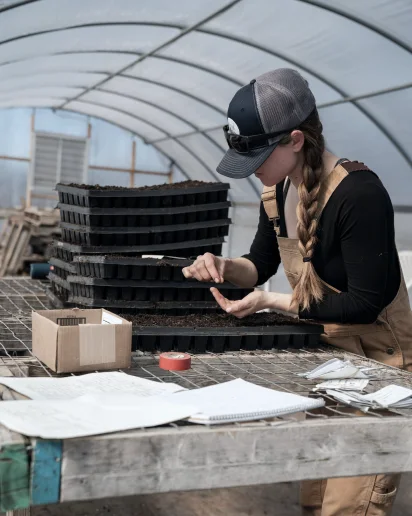
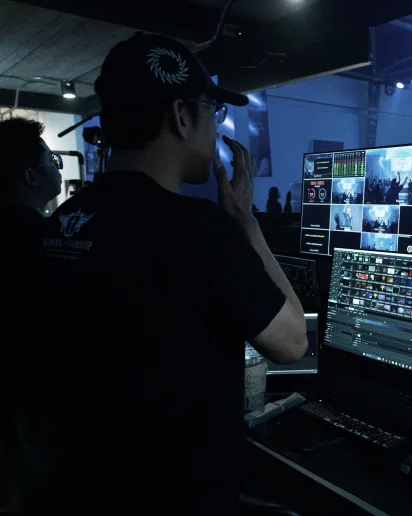
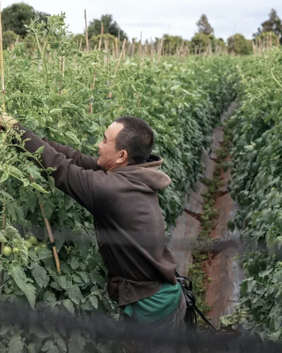

Chi siamo
Custodiamo l'identità italiana, garantendone la continuità nel tempo.
MAMMA è l'Agenzia per il Monitoraggio Atmosferico e la Modifica Meteorologica Ambientale. È una società a servizio dello Stato che progetta ed esegue interventi climatici a tutela del patrimonio agroalimentare italiano, dalla semina alla raccolta.
Perché proteggiamo il Made in Italy
Il Made in Italy agroalimentare non è solo ciò che mettiamo in tavola. È una delle prime voci dell'export del Paese, dà lavoro a milioni di persone e tiene in vita interi territori. Proteggere un prodotto significa proteggere tutto quello che gli sta intorno.
Il viaggio di un pomodoro di Pachino IGP
- 01 · Pachino (SR)Azienda Agricola Corallo
14 lavoratori stagionali, con tutte le giornate di lavoro garantite.
- 02 · Ispica (RG)Centro di confezionamento
38 addetti su due turni, da giugno a novembre.
- 03 · CataniaPorto di Catania
Ogni settimana partono container verso 27 paesi.
- 04 · GiapponeUn ristorante a Tokyo
Ci arriva in quattro giorni, con la classe A sull'etichetta.
La nostra storia
Tra il 2022 e il 2023 l'Italia ha scoperto quanto il suo cibo dipenda dal tempo. Negli anni seguenti siccità, alluvioni e grandinate si sono fatte sempre più frequenti. Poi, nell'autunno del 2033, il maltempo ha colpito le nostre eccellenze, e con loro le aziende che le coltivano, i lavoratori che le raccolgono e i mercati che le aspettano in tutto il mondo. Lo Stato ha deciso allora di fare per il clima quello che da sempre fa per i confini e per la salute. Proteggerlo.
I nostri valori
Del patrimonio agroalimentare italiano, dei territori che lo producono e delle persone che ci lavorano.
Nelle scelte e nelle azioni. Ogni intervento si basa su dati, misure e criteri pubblici.
Nelle competenze e nella trasparenza. Diciamo prima cosa faremo, e poi lo facciamo.
Il nome viene dalla sigla, ma non è un caso. Come una madre proteggiamo ciò che abbiamo di più caro e ci assicuriamo che a tavola non manchi niente.
Le persone
In MAMMA lavorano 1.900 persone tra meteorologi, ingegneri, piloti e tecnici di zona. I tecnici di zona sono il nostro volto sul territorio e seguono ogni azienda agricola, nelle zone protette come in quelle di compensazione.



«Ogni mattina controllo che ai miei agricoltori non manchi niente.»
Maria Lai, tecnico di zona a Oristano e nel Campidano
MAMMA in numeri
Governance e trasparenza
MAMMA è una società a servizio della Repubblica Italiana. Il consiglio di amministrazione è nominato dallo Stato e ogni anno riferisce al Parlamento sui risultati ottenuti e sull'uso delle risorse.
Come vengono assegnate le zone
Le zone protette e di compensazione vengono riassegnate ogni due anni in base all'Indice di valore agroalimentare, che misura quanto ogni territorio contribuisce al Made in Italy. Più un territorio produce valore, più viene protetto.